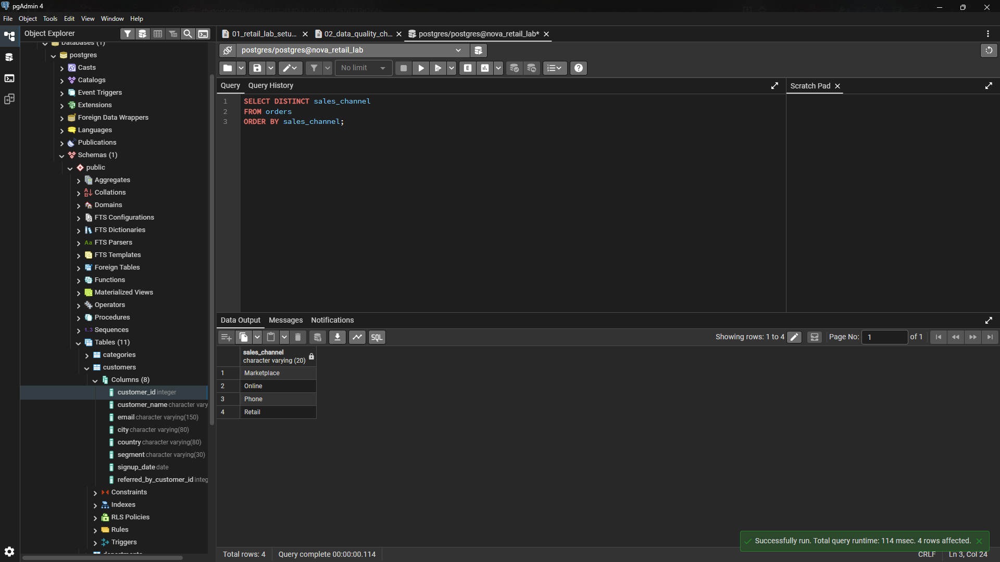
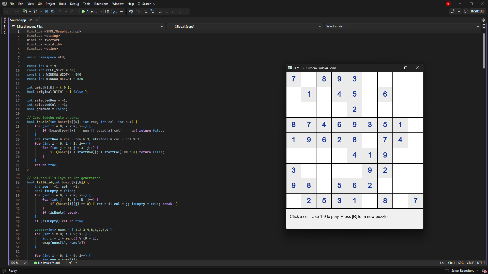
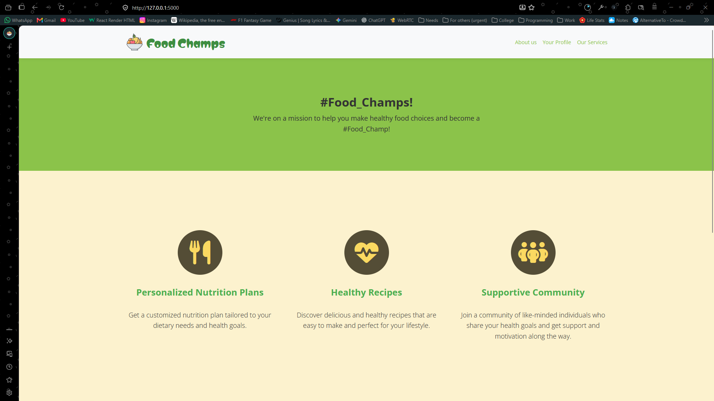

Python & Data
Python · NumPy · Pandas · Matplotlib · Jupyter Notebook · Google Colab
COMPUTER SCIENCE • AI & DATA SCIENCE
I'm Kyrollos Safwat, a Computer Science and Information Systems student focused on AI & Data Science, with hands-on experience in Python, SQL, data analysis, machine learning, and software development.
class DataScientist:
def __init__(self):
self.name = "Kyrollos Safwat"
self.focus = "AI & Data Science"
self.cgpa = 3.60
self.python = "Advanced"
self.sql = "Data Analysis"
self.goal = "Build useful AI solutions"I'm a Computer Science and Information Systems student at October 6th University with a 3.60/4.00 CGPA and a growing specialization in AI & Data Science.
My background combines programming, data analysis, software engineering, and hands-on technical projects. I enjoy taking a problem, understanding the data or system behind it, and turning it into a practical solution.
My career goal is to establish myself as a highly professional AI & Data Science practitioner, developing the technical and analytical expertise required to deliver reliable, data-driven solutions and contribute effectively to high-performing professional teams.
Python · NumPy · Pandas · Matplotlib · Jupyter Notebook · Google Colab
Machine Learning · PyTorch · TensorFlow · ML workflows · Data Analysis
SQL · PostgreSQL · Filtering · Aggregation · GROUP BY · HAVING · Data exploration
C++ · JavaScript · OOP · Data Structures · Algorithms · HTML · CSS
Git · GitHub · Linux · SFML · VS Code · Google Colab
Selected work focused on data analysis, algorithms, and practical application development.

Designed and analyzed a relational retail database in PostgreSQL, using structured SQL analysis to turn connected operational data into useful business insights.

Built an interactive graphical Sudoku application that combines puzzle generation, validation, user input, and recursive backtracking.

Developed a nutrition-focused web application combining healthy-food content, a calorie calculator, user-oriented interfaces, and interactive front-end functionality.
Other C++ work includes a Login & Registration System with persistent file-based user data, duplicate-user checks, password validation, and password hashing, plus a CGPA Calculator and Banking System.
IN PROGRESS • GIZA, EGYPT
Training in Python, Data Analysis, Data Visualization, Machine Learning, SQL, MLOps, MLflow, Hugging Face, and Prompt Engineering.
Completed a Python for Data Science project and progressing toward a capstone focused on real-world applications and gigs.
EDUCATION • GIZA, EGYPT
General Track · CGPA 3.60/4.00. Relevant coursework includes Digital Systems and Discrete Mathematics.
Udacity
Cisco
Udacity
Cisco
IBM SkillsBuild
06 • LET'S CONNECT
I'm open to internships, freelance opportunities, collaborative projects, and learning experiences in AI & Data Science.